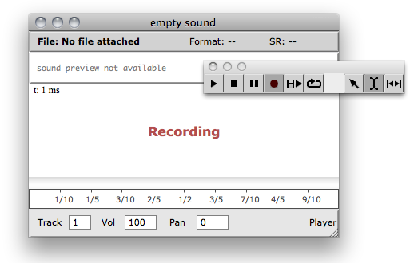

OpenMusic DocumentationHiérarchie de section : OM 6.6 User Manual > Audio > Recording
OpenMusic DocumentationHiérarchie de section : OM 6.6 User Manual > Audio > Recording
Navigation : page précédente | page suivante
Attention, votre navigateur ne supporte pas le javascript ou celui-ci à été désactivé. Certaines fonctionnalités de ce guide sont restreintes.
Recording
OM offers basic functionalities for recording audio input into sound files.
Only stereo recording is currently supported.
Recording Audio in a Patch
The RECORD-SOUND box allows to write the system audio input in a file and returns the path to this file.
First argument specifies a duration of audio recording. Evaluation will therefore be "freezed" during this time, before to return the created sound file.

Recording Audio in the Sound Editor
Use the RECORD button  in the sound editor in order to record a new sound.
in the sound editor in order to record a new sound.
At pressing RECORD, a dialog will allow to choose a location and name for the new sound file.
Press the STOP button of the palette to stop recording. The recorded sound will replace the previous sound in the editor and associated SOUND box.

More about the Sound Editor
Stereo recording
Note that recorded audio files are always stereo.
External tools exist (ex. in the OM-SuperVP library) to split multichannel audio tracks.
Références :
Plan :
Navigation : page précédente | page suivante
A propos...(c) Ircam - Centre Pompidou